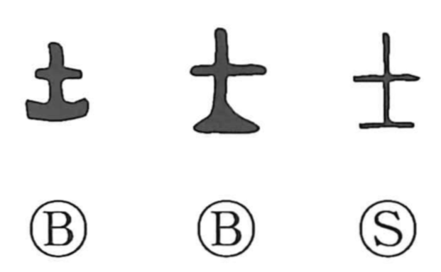

士

Kun: | On: shi
warrior ・ official ・ scholar ・ gentleman ・ male
Explanation
In its earliest forms, this character draws the head of a small broadax with the blade pointing downward. It was not a practical weapon but a ceremonial implement that marked social rank, identifying one who served the king in the warrior class. By contrast, the character 王 depicts the head of a large broadax set before the royal throne as a symbol of the king himself. From this origin in martial service, 士 broadened in use to denote those in official posts—civil servants, judges—and, more generally, a man or gentleman.